Publication-quality synteny plots with ggplot2
📖 Website & full documentation: https://loukesio.github.io/ggsynteny/
ggsynteny draws comparative-genomics figures in pure ggplot2: both macro-synteny (chromosome-level ribbons across any number of species) and micro-synteny (gene-level arrows connected by homology ribbons), in linear or circular layouts. It ships parsers for MCScanX, GENESPACE, and plain TSV input, a real rice-sorghum dataset, interactive hover-and-tooltip plots via ggiraph, and every colour argument accepts the 32 palettes of the ltc package by name — palette = "casa_natal" just works.
Version 0.5.0 adds circular views and ggsynteny Studio, a local Shiny app for uploading results, previewing data, and exporting figures and tables. The previous 0.3.0 source is preserved.
Installation

# with remotes (lightweight)
install.packages("remotes")
remotes::install_github("loukesio/ggsynteny")
# ...or with devtools
devtools::install_github("loukesio/ggsynteny")
# and load it
library(ggsynteny)The one-glance demo
Three plant genomes, one bundled dataset, one ltc palette driving the whole figure — chromosomes coloured per species, ribbons by source chromosome:
library(ggsynteny)
syn <- example_synteny_data() # Arabidopsis, Grape, Rice
plot_synteny(syn,
species_order = c("Arabidopsis", "Grape", "Rice"),
palette = "casa_natal")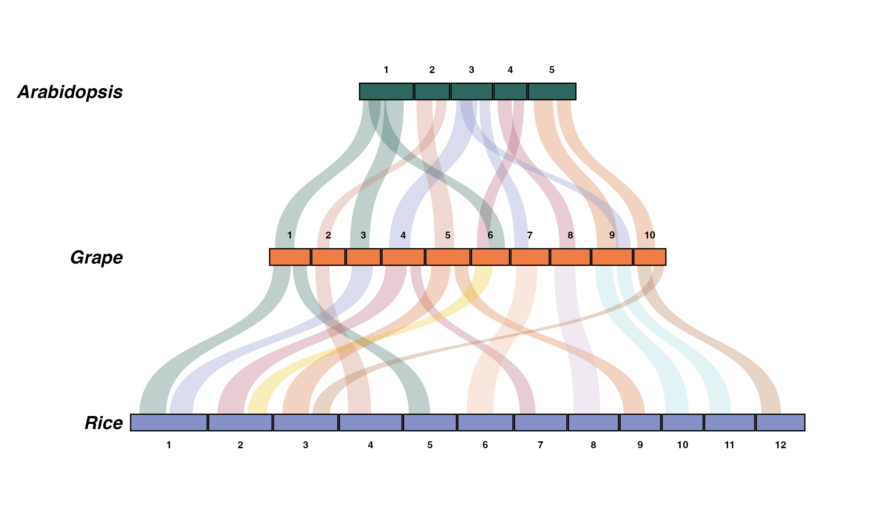
Real data: rice vs sorghum
The bundled rice_sorghum dataset is genuine MCScanX output — the rice-sorghum example data shipped with MCScanX itself, run through the tool and parsed with ggsynteny’s own read_mcscanx() (full pipeline in data-raw/rice_sorghum.R). Two grasses, ~50 million years of divergence, and the textbook conserved blocks are all there — rice 1 mapping almost entirely to sorghum 3, rice 11/12 to sorghum 5/8:
data(rice_sorghum)
plot_synteny(rice_sorghum, c("Rice", "Sorghum"),
palette = "casa_natal",
chr_fill = "per_chr", ribbon_fill = "source_chr")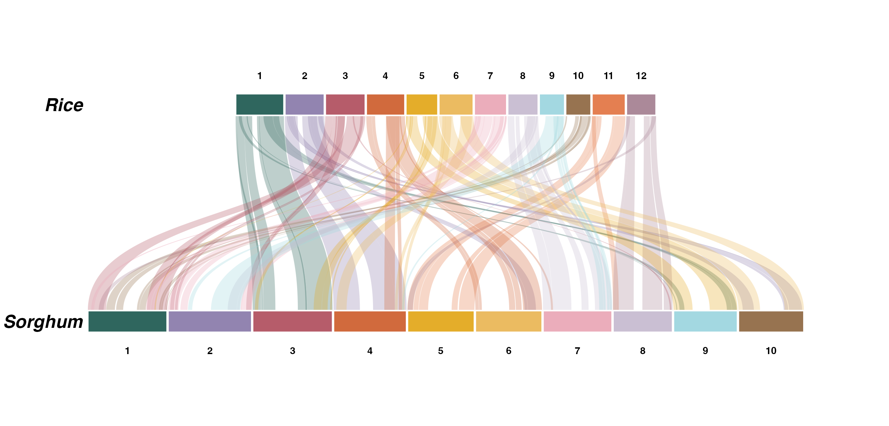
The full worked example — including a real bacterial gene cluster at the micro scale — is in the Real data article.
Chromosomes are square-cornered by default; chr_radius (in millimetres, via ggforce) rounds them into karyotype-style capsules — gene_radius does the same for gene arrows in micro-synteny:
plot_synteny(rice_sorghum, c("Rice", "Sorghum"),
palette = "casa_natal",
chr_fill = "per_chr", chr_radius = 1.5)Every function below follows the same pattern: what it is for, the arguments that matter (with their defaults), and a worked example.
The functions
plot_synteny() — chromosome-level (macro) synteny
What it’s for: stacking species as tiers of chromosomes and connecting their syntenic blocks with curved ribbons. Takes a list with chromosomes and blocks data frames (see the input formats below).
| Argument | Default | What it does |
|---|---|---|
syn_data |
— | List with chromosomes and blocks data frames |
species_order |
— | Display order, top to bottom |
palette |
NULL |
One palette for the whole plot: an ltc name ("casa_natal"), "Okabe-Ito", or a colour vector |
chr_fill |
"uniform" |
Chromosome colouring: "uniform" (dark #333333 default), "per_species", "per_chr", or "custom"
|
chr_color |
"white" |
Chromosome outline — white seams by default; "black" for the classic outlined look |
chr_palette |
NULL |
Overrides palette for chromosomes: a palette name, colour vector, or named key-to-colour vector |
ribbon_fill |
"source_chr" |
Ribbon colouring: "source_chr", "target_chr", "species_pair", "uniform", or "custom"
|
ribbon_palette |
NULL |
Overrides palette for ribbons; same forms as chr_palette
|
ribbon_alpha |
0.30 |
Ribbon transparency |
curvature |
0.55 |
Ribbon curve strength (0–1) |
tier_spacing |
18 |
Vertical distance between species |
chr_radius |
0 |
Corner radius in mm — 1.5 gives karyotype-style capsules (needs ggforce) |
interactive |
FALSE |
Build ggiraph-interactive layers — render with syn_girafe()
|
With nothing specified you get the house default: quiet dark chromosomes ("#333333" with white seams) and ribbons coloured from the alger palette — the ribbons carry the signal, the chromosomes stay out of the way:
plot_synteny(syn, species_order = c("Arabidopsis", "Grape", "Rice"))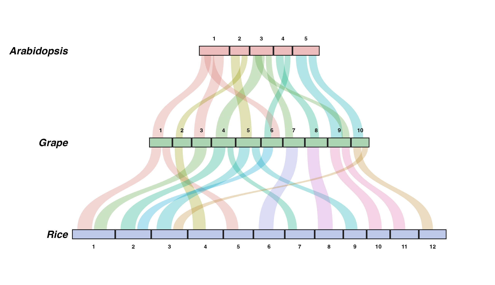
chr_fill = "per_chr" colours each chromosome label separately — here from the minou palette (interpolated when there are more chromosomes than colours):
plot_synteny(syn, species_order = c("Arabidopsis", "Grape", "Rice"),
chr_fill = "per_chr", palette = "minou")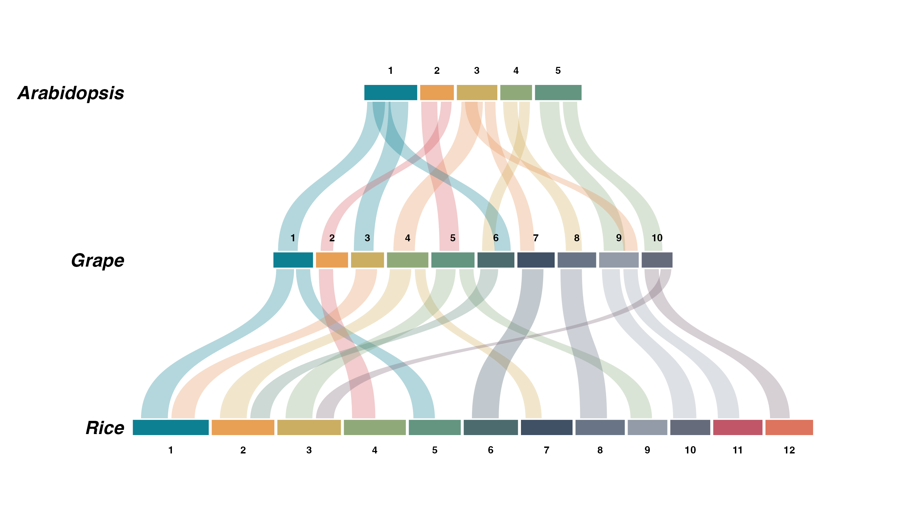
And quiet chromosomes with one ribbon colour per species pair, from trio1:
plot_synteny(syn, species_order = c("Arabidopsis", "Grape", "Rice"),
chr_fill = "uniform", chr_palette = "#E8E4DF",
ribbon_fill = "species_pair", ribbon_palette = "trio1",
ribbon_alpha = 0.35)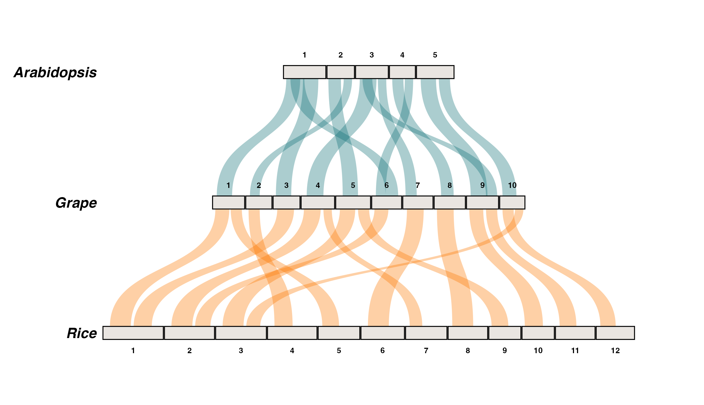
Named vectors keep working as explicit mappings whenever you need full control:
plot_synteny(syn, species_order = c("Arabidopsis", "Grape", "Rice"),
chr_fill = "per_species",
chr_palette = c("Arabidopsis" = "#B8D4E3",
"Grape" = "#C5B4E3",
"Rice" = "#B8E3C5"))
plot_microsynteny() — gene-level (micro) synteny
What it’s for: drawing individual genes as strand-aware arrows and connecting homologous genes with ribbons — the classic gene-cluster figure.
| Argument | Default | What it does |
|---|---|---|
features |
— | Data frame: bin_id, seq_id, start, end, strand, feat_id, name
|
links |
— | Data frame: feat_id_a, feat_id_b, optional identity (0–100) |
bin_order |
first appearance | Display order, top to bottom |
palette |
NULL |
One palette for genes and ribbons, as in plot_synteny()
|
gene_fill |
"per_name" |
Gene colouring: "per_name", "per_feat", or "uniform"
|
gene_palette |
NULL |
Overrides palette for genes |
ribbon_fill |
"identity" |
Ribbon colouring: "identity", "per_name", or "uniform"
|
ribbon_palette |
NULL |
Overrides palette for ribbons; with "identity", used as the colour ramp |
gene_radius |
0 |
Corner radius in mm — softens the arrows (needs ggforce) |
ribbon_anchor |
"body" |
Where ribbons attach: "body" keeps arrowheads clear; "full" spans the whole gene (see below) |
label_genes |
TRUE |
Italic gene-name labels above/below the arrows |
interactive |
FALSE |
Build ggiraph-interactive layers — render with syn_girafe()
|
micro <- demo_microsynteny_data() # a moa/moe gene cluster, three strains
plot_microsynteny(micro$features, micro$links,
bin_order = c("ZONMW-30", "ZONMW-20", "ZONMW-10"),
palette = "casa_natal")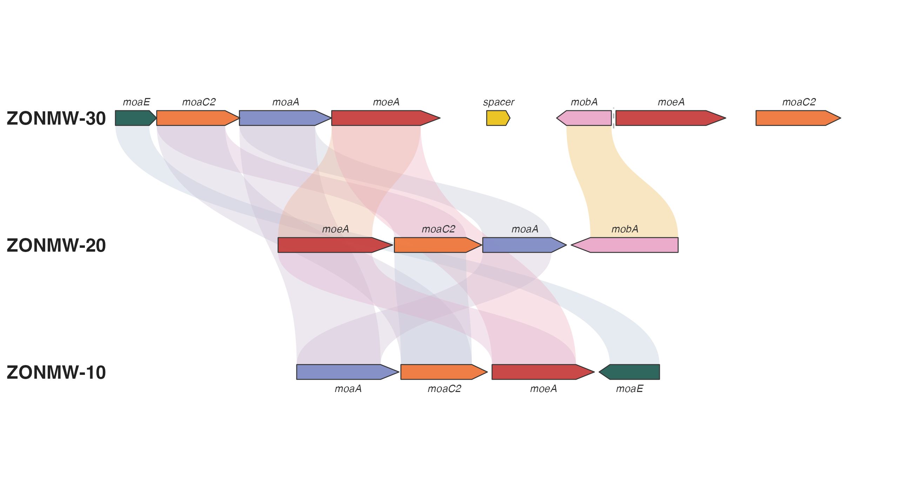
With ribbon_fill = "identity" the ribbon colour encodes percent identity. By default that is a light-to-dark blue ramp; pass an ordered palette (heatmap0–heatmap3) as ribbon_palette to restyle it:
plot_microsynteny(micro$features, micro$links,
bin_order = c("ZONMW-30", "ZONMW-20", "ZONMW-10"),
gene_fill = "per_name", gene_palette = "casa_natal",
ribbon_fill = "identity", ribbon_palette = "heatmap0")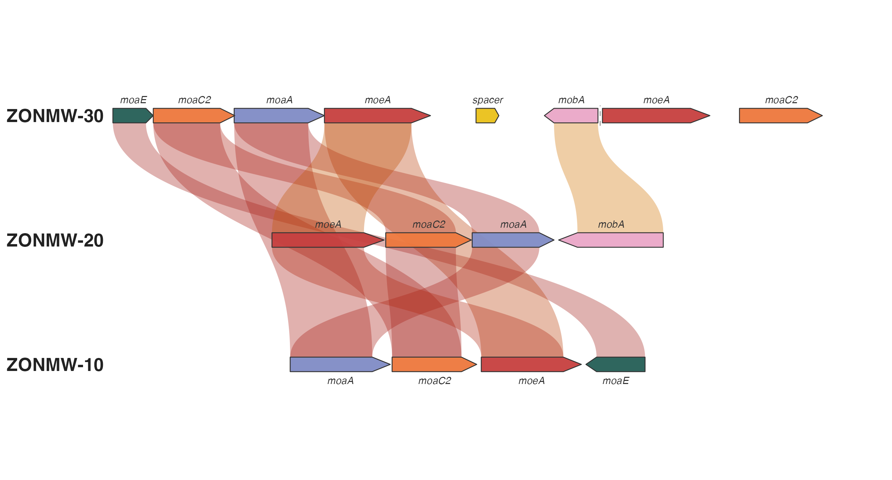
Where ribbons attach: ribbon_anchor
A gene arrow has a rectangular body and a pointed tip, and there are two defensible places for a ribbon to end. ribbon_anchor = "body" (the default) attaches ribbons to the body only, so every arrowhead stays clear and strand direction remains readable even under dense links. ribbon_anchor = "full" spans the whole gene, tip included — the convention of clinker, gggenomes and pyGenomeViz — which reads as “this entire gene is part of the link”:
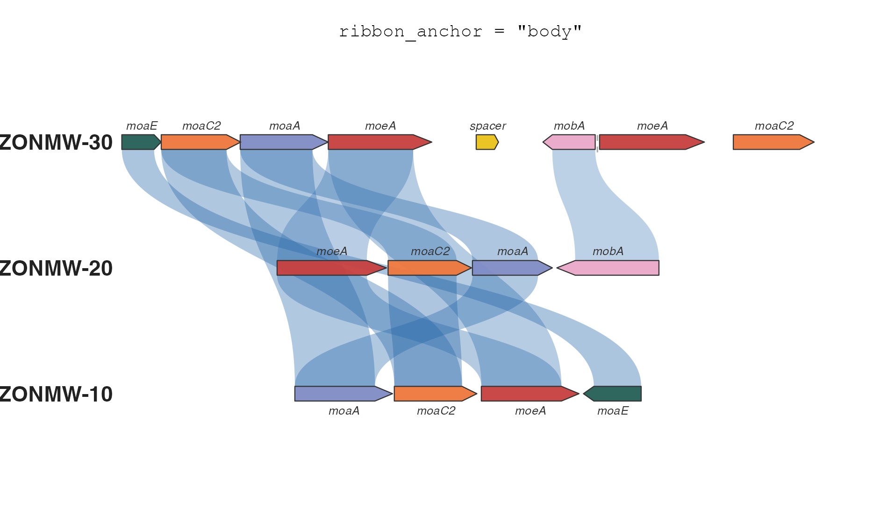
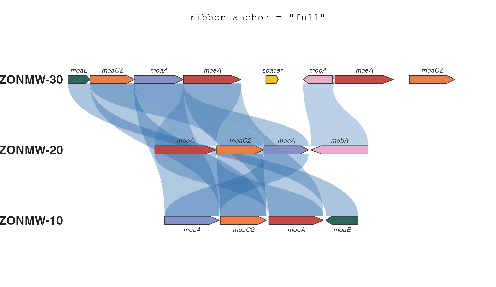
Use "body" when the figure is about gene order and orientation (the tips carry the information); switch to "full" when the links represent alignments over entire genes and coverage is the message.
plot_circular_synteny() — circular chromosome-level synteny
What it’s for: arranging chromosomes as proportional arcs around a circle and connecting their syntenic blocks with ribbons. Takes the same chromosomes and blocks tables as plot_synteny(). All supplied relationships among the selected species are drawn, including non-adjacent species.
The circular functions are included in ggsynteny 0.5.0. They use native ggplot2 layers and the same ltc palette names as the linear views.
| Argument | Default | What it does |
|---|---|---|
syn_data |
— | List with chromosomes and blocks data frames |
species_order |
first appearance | Selects species and their order around the circle |
palette |
NULL |
An ltc name ("casa_natal"), "Okabe-Ito", an HCL palette name, or a colour vector |
chr_fill |
"uniform" |
Chromosome colouring: "uniform", "per_species", "per_chr", or "custom"
|
chr_palette |
NULL |
Overrides palette for chromosomes; named vectors provide explicit mappings |
ribbon_fill |
"source_chr" |
Ribbon colouring: "source_chr", "target_chr", "species_pair", "uniform", or "custom"
|
ribbon_palette |
NULL |
Overrides palette for ribbons |
ribbon_alpha |
0.30 |
Ribbon transparency |
gap / group_gap
|
1 / 10
|
Gaps between chromosomes / species, in degrees |
start_angle / clockwise
|
90 / TRUE
|
Starts at the top, with genomic coordinates increasing clockwise |
curvature |
0.65 |
Pull of ribbon control points towards the centre (0–1) |
track_width |
0.055 |
Chromosome thickness as a fraction of the outer radius |
show_orientation |
FALSE |
Connects endpoints using the block’s plus / minus orientation metadata |
interactive |
FALSE |
Build ggiraph-interactive layers — render with syn_girafe()
|
The same rice-sorghum dataset now becomes 22 chromosome arcs connected by 100 block ribbons. Chromosomes use one colour per species; ribbons are coloured by source chromosome:
data(rice_sorghum)
plot_circular_synteny(rice_sorghum, c("Rice", "Sorghum"),
palette = "casa_natal", chr_fill = "per_species")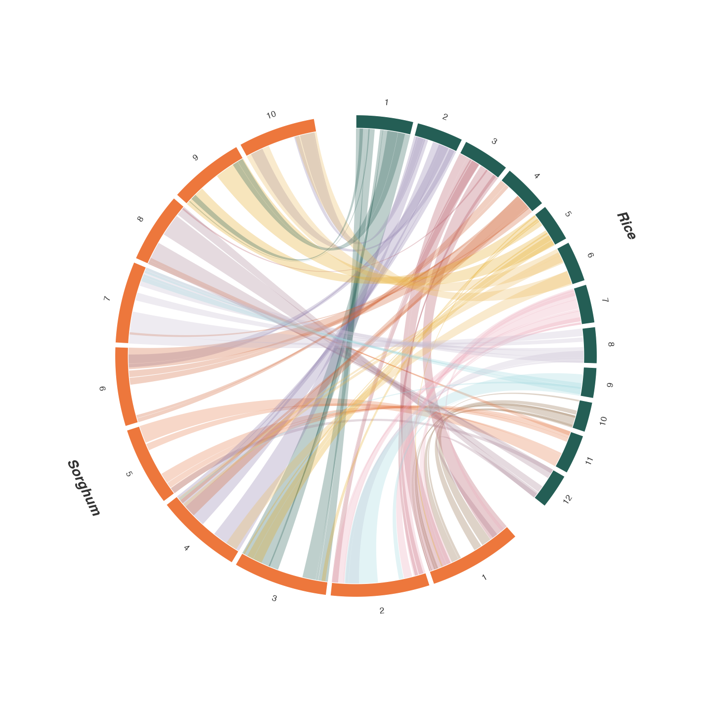
Chromosome arc lengths share a common genomic scale. Ribbons retain their original block coordinates; their widths are not summed estimates of unique coverage. With show_orientation = TRUE, starts connect to starts for plus and to ends for minus. A twist alone does not identify an inversion around a circle; use the supplied orientation metadata when interpreting direction.
plot_circular_microsynteny() — circular gene-level synteny
What it’s for: drawing gene regions from multiple genomes as curved, strand-aware arrows, with homology ribbons inside the circle. Takes the same feature and link tables as plot_microsynteny().
| Argument | Default | What it does |
|---|---|---|
features |
— | Data frame: bin_id, seq_id, start, end, strand, unique feat_id, name
|
links |
— | Data frame: feat_id_a, feat_id_b, optional identity (0–100) |
bin_order |
first appearance | Selects bins and their order around the circle |
palette |
NULL |
One palette for genes and categorical ribbons, including every ltc name |
gene_fill |
"per_name" |
Gene colouring: "per_name", "per_feat", or "uniform"
|
gene_palette |
NULL |
Overrides palette for genes; named vectors map names or IDs |
ribbon_fill |
"identity" |
Ribbon colouring: "identity", "per_name", or "uniform"
|
ribbon_palette |
NULL |
Overrides categorical ribbon colours or sets the identity ramp |
ribbon_alpha |
0.35 |
Ribbon transparency |
ribbon_anchor |
"body" |
"body" keeps arrowheads clear; "full" spans the whole gene |
gap / group_gap
|
2 / 10
|
Gaps between contigs / bins, in degrees |
start_angle / clockwise
|
90 / TRUE
|
Starts at the top, with genomic coordinates increasing clockwise |
curvature |
0.65 |
Pull of ribbon control points towards the centre (0–1) |
track_width |
0.065 |
Gene-arrow thickness as a fraction of the outer radius |
arrowhead_frac |
0.18 |
Fraction of each gene used for its arrowhead, capped at 6 degrees |
label_genes |
TRUE |
Italic gene-name labels outside the arrows |
interactive |
FALSE |
Build ggiraph-interactive layers — render with syn_girafe()
|
Matching gene names and their ribbons share colours when ribbon_fill = "per_name":
micro <- demo_microsynteny_data()
plot_circular_microsynteny(micro$features, micro$links,
palette = "casa_natal", ribbon_fill = "per_name")
Arrow direction shows strand. The default ribbon_fill = "identity" uses the same blue ramp as the linear view; set ribbon_palette = "heatmap0" or "Viridis" explicitly to change it. Contigs span their first to last supplied feature; unannotated flanks are not inferred. A circular layout does not imply that the underlying chromosomes are biologically circular.
Three bacteria: ZONMW-30, ZONMW-20 and HI1
This worked example uses the bundled bacterial CSV inputs: 21 genes across four contigs, connected by nine supplied homology links. The prepared TSVs have unique feature IDs and can be read directly:
features <- read.delim(system.file("extdata", "circular_bacterial_features.tsv",
package = "ggsynteny"))
links <- read.delim(system.file("extdata", "circular_bacterial_links.tsv",
package = "ggsynteny"))
p <- plot_circular_microsynteny(
features, links,
bin_order = c("ZONMW-30", "ZONMW-20", "HI1"),
palette = "casa_natal", ribbon_fill = "per_name",
ribbon_alpha = 0.36, group_gap = 15, gap = 5,
track_width = 0.055, label_size = 2.3, bin_label_size = 4.5
)
p
ggplot2::ggsave("three-bacteria.pdf", p, width = 10, height = 10.5)
Download the annotated vector PDF.
The selected regions are ZONMW-30 contig 4, ZONMW-20 contigs 10 and 17, and HI1 contig 1. Placeholder spacer rows are omitted while genomic coordinates and gaps are retained. ZONMW-30’s other contigs reuse feature IDs and are outside this selected region. The input has four ZONMW-30–ZONMW-20 links and five ZONMW-20–HI1 links; no direct ZONMW-30–HI1 links or identity scores are inferred. Preparation and figure generation are reproducible with Rscript data-raw/circular_bacteria.R from the package root.
Both circular functions return ordinary ggplot2 objects. Add labs(), themes or annotations with +; use interactive = TRUE and syn_girafe(p, width_svg = 8, height_svg = 8) for hover tooltips. The circular guide has more on coordinates, orientation, export and interactivity.
Visual inspiration: gbdraw’s circular genome maps and circlize’s chord diagrams. The rendering implementation uses ggplot2 throughout.
ggsynteny_app() — upload, preview and export with Shiny
Open ggsynteny Studio in your browser — no installation or sign-in required.
What it’s for: exploring existing synteny results in a browser. Select the software or table format, upload its files, and see the data and plot preview. Switch between linear and circular views, choose an ltc palette, reorder or subset genomes, adjust ribbons, and download the figure or displayed records. Turn on the Interactive plot switch to inspect ribbons and features with tooltips, highlight relationships, and zoom into either layout. This uses optional ggiraph 0.9.2 or later (install.packages("ggiraph")). PDF and PNG downloads remain static; the R-script download also includes the interactive version when the toggle is enabled. Scroll to zoom, drag to pan, and use the toolbar to reset the view.
To host Studio on Posit Connect Cloud, use the dedicated deployment entry point and guide. Its manifest pins the package and dependencies used by the hosted app.
| Argument | Default | What it does |
|---|---|---|
host |
"127.0.0.1" |
Runs locally on your computer |
port |
NULL |
Optional server port; Shiny chooses one by default |
launch.browser |
interactive() |
Opens the app in your browser |
install.packages("shiny") # optional; needed only for the app
library(ggsynteny)
ggsynteny_app()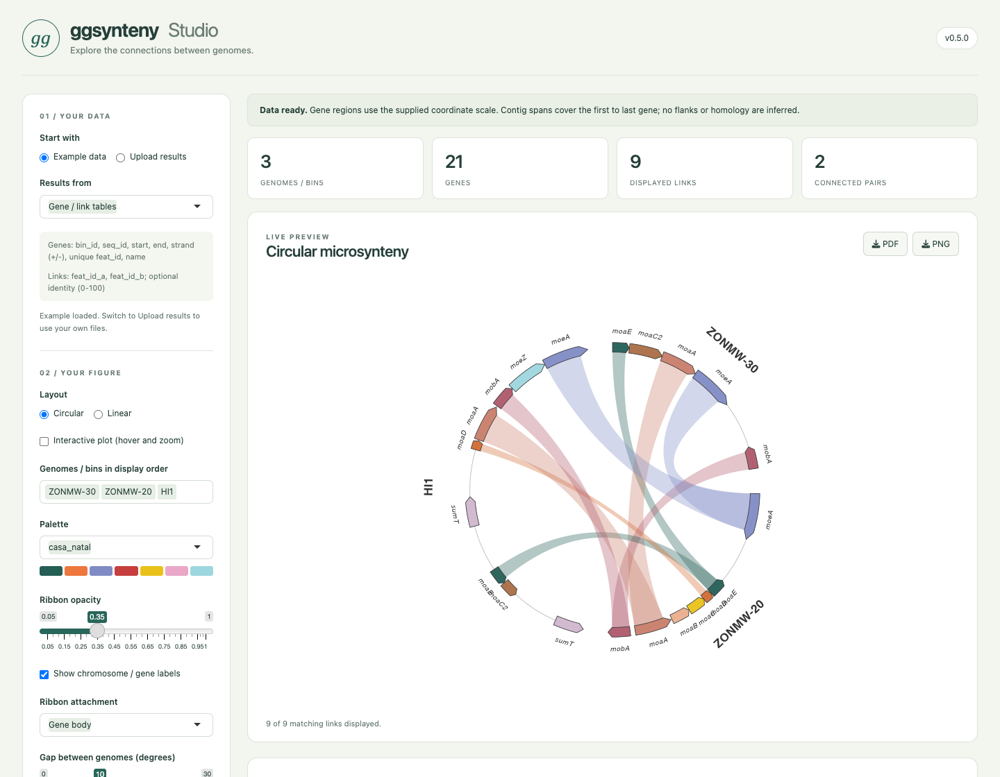
| Results from | Upload | Available views |
|---|---|---|
| Native chromosome tables | Chromosome sizes and syntenic blocks, TSV or CSV | Linear / circular chromosome synteny |
| MCScanX |
.collinearity and its four-column gene-position GFF |
Linear / circular chromosome synteny |
| GENESPACE |
synHits TSV with genome, chromosome and interval columns |
Linear / circular chromosome synteny |
| Gene / link tables | Gene features and homology links, TSV or CSV | Linear / circular microsynteny |
Every format includes example data. The MCScanX and GENESPACE previews use larger, explicitly simulated datasets: four genomes with eight chromosomes each, spanning all six genome pairs. MCScanX includes 240 blocks with forward and reverse anchor order; GENESPACE includes 384 compatible interval matches. They illustrate conserved regions and rearrangements; they are not outputs from running those tools on biological samples. Rebuild the files with Rscript data-raw/studio_simulated.R. The original small files remain available for the short parser examples below.
Uploaded tables are checked for required columns, valid intervals and matching identifiers. The app previews the first 50 rows of each displayed table and reports the number of links drawn. The explicit link limit defaults to 1,000, keeping larger inputs manageable; raise it to display more. Linear chromosome views retain adjacent-genome links; circular views include all supplied relationships among selected genomes.
Download PDF or PNG, the displayed data tables, pair counts, or an R script that recreates the figure from those tables. No identity scores or missing homology links are inferred. The software selector reads existing results; it does not run MCScanX, GENESPACE or an alignment pipeline. Shiny is optional and is not required to use the plotting functions.
syn_girafe() — interactive plots
What it’s for: hover highlighting and tooltips in HTML output (R Markdown, Quarto, Shiny, pkgdown) via ggiraph. Build the plot with interactive = TRUE, then render the widget with syn_girafe() — hovering a ribbon fades all the others and shows the block coordinates (or the gene pair and its identity in micro-synteny):
data(rice_sorghum)
p <- plot_synteny(rice_sorghum, c("Rice", "Sorghum"),
palette = "casa_natal", chr_fill = "per_chr",
interactive = TRUE)
syn_girafe(p)Try it live (hover it yourself) in the Interactive article.
syn_palettes() — the built-in colours
What it’s for: every palette argument accepts, by name, all 32 palettes of the ltc package (vendored — ltc need not be installed; a few are curated for use as fills on a white background, dropping pure-black and near-white entries). Names match case-insensitively and ignore spaces, underscores and dashes, so "casa_natal", "Casa Natal" and "casanatal" are the same palette. "Okabe-Ito", any colour vector, and grDevices::hcl.colors() names work too. syn_palettes() returns them all as a named list:
names(syn_palettes()) # all 32 names
syn_palettes()$casa_natal # the hex colours of one palette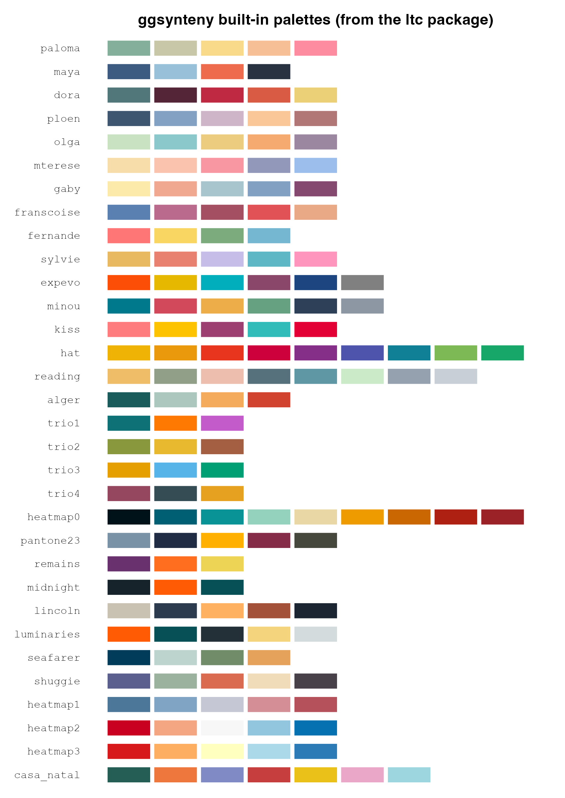
The heatmap0–heatmap3 palettes are ordered ramps (always interpolated end-to-end) — the natural choice for ribbon_fill = "identity"; the rest are qualitative sets for species, chromosomes, and genes.
Data input formats
Each format below ships with a small simulated example under system.file("extdata", ..., package = "ggsynteny") — run the snippets as-is to try each parser.
1. Native TSV format
chr_file <- system.file("extdata", "chromosomes.tsv", package = "ggsynteny")
blocks_file <- system.file("extdata", "synteny_blocks.tsv", package = "ggsynteny")
syn <- read_synteny_tsv(chr_file, blocks_file)
plot_synteny(syn, species_order = c("Human", "Mouse"))chromosomes.tsv (sizes in any consistent unit, e.g. Mb):
synteny_blocks.tsv:
2. MCScanX
coll_file <- system.file("extdata", "mcscanx_output.collinearity", package = "ggsynteny")
gff_file <- system.file("extdata", "mcscanx_output.gff", package = "ggsynteny")
syn <- read_mcscanx(coll_file, gff_file)
plot_synteny(syn, species_order = c("Wheat", "Barley"))The parser preserves plus/minus in syn$blocks$orientation. Ribbons show block coverage by default. To show inverted blocks as twisted ribbons, use plot_synteny(syn, c("Wheat", "Barley"), show_inversions = TRUE). This requires orientation metadata; the previously bundled rice_sorghum dataset does not contain that field.
3. GENESPACE
synhits_file <- system.file("extdata", "genespace_synHits.tsv", package = "ggsynteny")
syn <- read_genespace(synhits_file)
plot_synteny(syn, species_order = c("Maize", "Teosinte"))Saving your plot
Two independent knobs control a saved PNG: width/height in pixels decide how big (and how sharp) the image is; dpi decides how big the letters are relative to the plot. Letters too small → raise dpi; labels overlapping → lower it.
syn <- example_synteny_data()
p <- plot_synteny(syn, species_order = c("Arabidopsis", "Grape", "Rice"),
palette = "casa_natal")
ggplot2::ggsave("synteny.png", p, width = 2600, height = 1500, units = "px",
dpi = 300, bg = "white") # bg = "white": otherwise the PNG is transparent
ggplot2::ggsave("synteny.pdf", p, width = 12, height = 7) # vector, for journalsAPI reference
| Function | Purpose |
|---|---|
plot_synteny() |
Macro-synteny: chromosome tiers + block ribbons (palette, chr_fill, ribbon_fill, curvature) |
plot_microsynteny() |
Micro-synteny: gene arrows + homology ribbons (palette, gene_fill, ribbon_fill = "identity", ribbon_anchor) |
plot_circular_synteny() |
Chromosome arcs with synteny ribbons, grouped by species |
plot_circular_microsynteny() |
Curved gene arrows with homology ribbons, grouped by bin |
ggsynteny_app() |
Local Shiny app: upload results, preview plots, and export figures/data |
syn_girafe() |
Render an interactive = TRUE plot as a hoverable widget |
syn_palettes() |
List the 32 built-in colour palettes |
read_synteny_tsv() |
Read the native two-TSV format |
read_mcscanx() |
Parse MCScanX .collinearity + .gff
|
read_genespace() |
Parse a GENESPACE synHits file |
rice_sorghum |
Real rice-sorghum macro-synteny (MCScanX output) — data(rice_sorghum)
|
example_synteny_data() |
Bundled macro-synteny example (Arabidopsis, Grape, Rice) |
demo_microsynteny_data() |
Bundled micro-synteny example (moa/moe cluster) |
Contributions
ggsynteny is developed and maintained by Loukas Theodosiou (loukesio@gmail.com). Issues and pull requests are welcome at https://github.com/loukesio/ggsynteny/issues. It pairs naturally with its sibling packages ltc (the colour palettes) and ggvmap (Voronoi treemaps).
License
MIT © 2026 Loukas Theodosiou — see LICENSE.md for the full text. (The two-line LICENSE file is the CRAN-required stub that points to the same terms.)